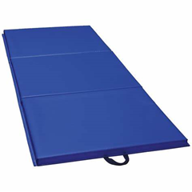
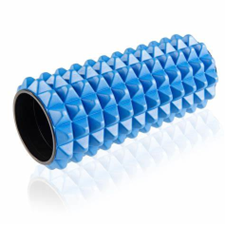
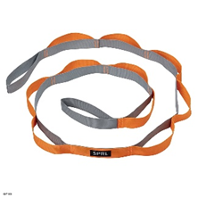
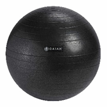

Stretching and Flexibility Zone
A quiet area dedicated to stretching, mobility exercises, and flexibility training.
Target Audience:
Suitable for all members, especially those looking to improve flexibility, recover from workouts, or prevent injuries.
Equipments (click for more informations):



